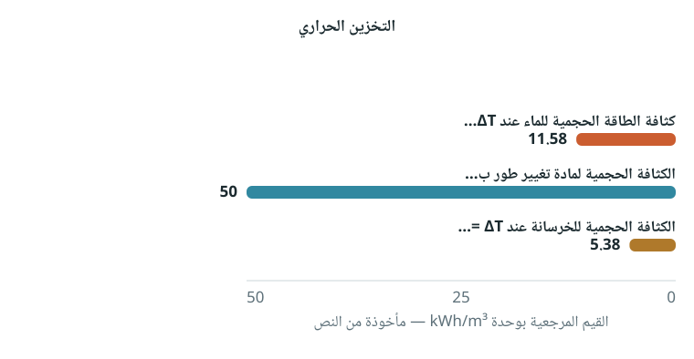

التخزين الحراري
Thermal Energy Storage
حفظ الحرارة أو البرودة بين زمن الإنتاج وزمن الحاجة، محسوسًا أو كامنًا أو كيميائيًا؛ كثافة الماء 11.6 kWh/m³ عند ΔT = 10 K، ومادة طور كامنة 200 kJ/kg تعطي 50 kWh/m³.
التخزين الحراري فصل زمني بين إنتاج الطاقة الحرارية واستهلاكها: تُحفظ الحرارة أو البرودة في وسط (ماء، صخر، ملح، مادة تغيير طور) وتُستعاد لاحقًا. أنواعه ثلاثة: محسوس يعتمد على رفع حرارة الوسط، وكامن يعتمد على حرارة التحول الطوري عند حرارة شبه ثابتة، وكيميائي حراري يعتمد على تفاعل عكوس. مقياس الجدوى الأول كثافة الطاقة الحجمية kWh/m³، والثاني الفقد مع الزمن، والثالث سلوك الشحن والتفريغ وقابلية التكرار لآلاف الدورات. تطبيقاته: تمديد تشغيل التبريد الشمسي بعد الغروب، وإزاحة الحمل الكهربائي عن ساعات الذروة، وخزانات الملح المصهور في المحطات الشمسية المركّزة. والفكرة المشتركة أن القدرة الحرارية تُشترى حين تكون رخيصة أو متاحة، وتُستهلك حين تكون مطلوبة أو غالية.
كيف تعمل الظاهرة؟
في التخزين المحسوس تُسخّن الكتلة فترتفع حرارتها، وتُحفظ الطاقة في اهتزازات الشبكة والجزيئات؛ الكمية المخزونة m·c_p·ΔT وتُستعاد بتمرير السائل على الكتلة. في الكامن تُستهلك الحرارة في كسر الترتيب البلوري أو تغيير الطور، فتُخزّن كثافة أكبر ضمن نطاق حرارة ضيق. الفقد يجري بمعدل U·A·ΔT مع المحيط، فيُعزل الخزان ويُفضّل شكله الأقرب إلى الكرة أو الأسطوانة الرأسية لتقليل السطح النوعي. وفي خزانات الماء تُستثمر الطبقية الحرارية: الماء الساخن يعلو البارد، فمن يأخذ من أعلى ويُعيد إلى أسفل يحفظ طاقة أكبر من خزان مختلط بالحجم نفسه.
العلاقة بالأرقام
كثافة الطاقة المحسوسة = ρ·c_p·ΔT. للماء ρ = 997 kg/m³ وc_p = 4.1816 kJ/(kg·K)، إذن ρ·c_p = 4.1691 MJ/(m³·K)، وعند ΔT = 10 K تكون 41.69 MJ/m³، وبقسمة 3.6 (لأن 1 kWh = 3.6 MJ) = 11.58 kWh/m³. وللمادة الكامنة: حرارة انصهار 200 kJ/kg وكثافة 900 kg/m³ تعطيان 900 × 200 = 180 MJ/m³ = 50.0 kWh/m³، أي 4.3 أضعاف الماء لنفس الحجم. وللخرسانة ρ·c_p = 2200 × 0.88 = 1.936 MJ/(m³·K)، أي 19.36 MJ/m³ عند 10 K = 5.38 kWh/m³. لتخزين 100 kWh يلزم 100 ÷ 11.58 = 8.64 m³ ماء أو 100 ÷ 50.0 = 2.0 m³ من تلك المادة الكامنة.
مفاهيم متقاربة
الفرق الجوهري عن البطارية أن الوسط المخزِّن هو الطاقة نفسها لا وسيط كهروكيميائي، فلا تحويل بين كهرباء وحرارة عند الاستعادة. والتخزين الكامن يختلف عن المحسوس في أن الحرارة تُستهلك عند حرارة شبه ثابتة، فيصير الخزان مصدرًا حراريًا منتظمًا لا منحدرًا. والخزان يختلف عن العزل: العزل يقلّل الفقد من نظام قائم، والخزان يضيف كمية إلى النظام. ويختلف عن التخزين الكيميائي الحراري الذي يفصل المواد المتفاعلة ويجمعهما عند الطلب، فالكامن يغيّر الطور والكيميائي يغيّر التركيب.
حدود التطبيق
الكثافة المحسوبة لا تُستخدم كلها: فرق الحرارة محدود بتطبيق المستخدم، فماء التبريد يعمل بين 5 و12 °م لا بين 10 و90، فينخفض ΔT المتاح وتقل السعة العملية. والفقد يتراكم مع الزمن، فالتخزين الطويل فوق أسبوع يحتاج عزلًا سميكًا قد لا يعوّض كلفته. والمواد الكامنة تفقد سعتها بالدورات: انفصال الطور والتبريد الفائق يخفضان الحرارة المتاحة تدريجيًا. والطاقة المخزونة منخفضة الحرارة ذات إكسيرجي منخفضة حتى لو كانت كميتها كبيرة، فلا تصلح للعمل الميكانيكي ولا لتوليد الكهرباء مباشرة.

| الكمية | القيمة | المصدر |
|---|---|---|
| كثافة الطاقة الحجمية للماء عند ΔT = 10 K | 11.58 kWh/m³ | [2] |
| الكثافة الحجمية لمادة تغيير طور بحرارة انصهار 200 kJ/kg | 50.0 kWh/m³ | [1] |
| الكثافة الحجمية للخرسانة عند ΔT = 10 K | 5.38 kWh/m³ | [2] |
| حجم الماء اللازم لتخزين 100 kWh | 8.64 m³ | [2] |
| حجم المادة الكامنة اللازم لتخزين 100 kWh | 2.0 m³ | [1] |
المصادر
- 1 Thermal Energy Storage: Systems and Applications (Dinçer & Rosen) — Wiley (2010). openlibrary.org/api/books?bibkeys=ISBN:9780470747063&format=json&jscmd=data · اطُّلع عليه 2026-11-26
- 2 Thermodynamics: An Engineering Approach, 8th ed. — McGraw-Hill (2015). openlibrary.org/api/books?bibkeys=ISBN:9780073398174&format=json&jscmd=data · اطُّلع عليه 2026-11-26
استشهد بهذا المصطلح
الصيغتان مبنيتان من بيانات الصفحة نفسها: العنوان والتاريخ ورابط النسخة المنشورة.
التخزين الحراري — Thermal Energy Storage. (2026). ديوان المعرفة — انفراد. https://infiradev.com/diwan/terms/term-thermal-energy-storage.html
@misc{term-thermal-energy-storage2026,
title = {التخزين الحراري},
titleaddon = {Thermal Energy Storage},
howpublished = {{ديوان المعرفة — انفراد} — مرجع علمي عربي},
year = {2026},
url = {https://infiradev.com/diwan/terms/term-thermal-energy-storage.html},
urldate = {2026-11-26},
note = {مراجعة علمية: hermes — مراجعة آلية بالتكليف 2026-11-26}
}
راجعه: hermes — مراجعة آلية بالتكليف 2026-11-26 · 2026-11-26 · آخر تحديث 2026-11-26